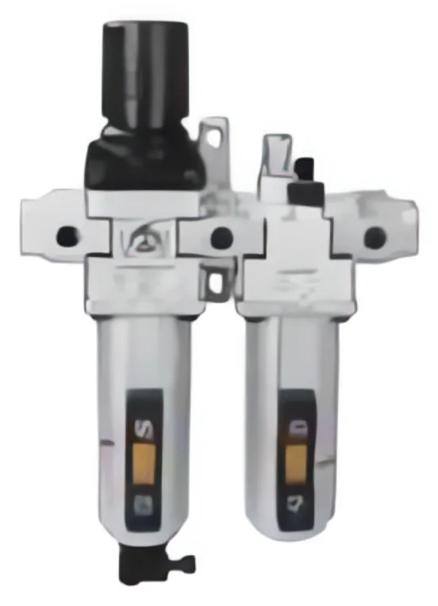

GROZ · Air Handling
Filter Regulator & Lubricator - 2 Piece Metal Bowl
CAT NR FRCLM149134-MS/W · ORD NR 60841
| CAT NR (catalogue number) | FRCLM149134-MS/W |
|---|---|
| ORD NR (order number) | 60841 |
| Variant (printed column) | NPT THREADS |
| Table section | COMPACT SERIES |
Ask for a quote The catalogue PDF, page 322
“Ask for a quote” opens this product in the catalogue: add it to your quote and send it. Buyers from Africa, the Gulf and worldwide are welcome; prices in USD, EUR or INR.
From the GROZ Fluid Handling CC-07 catalogue. Not yet verified: these details were read from the printed catalogue automatically; check the catalogue page before ordering.